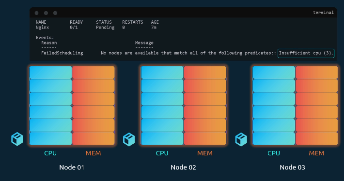
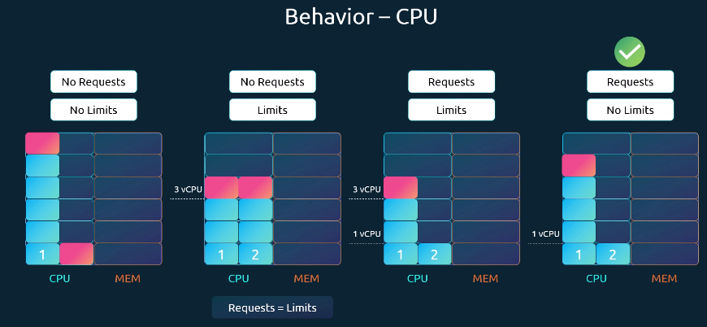
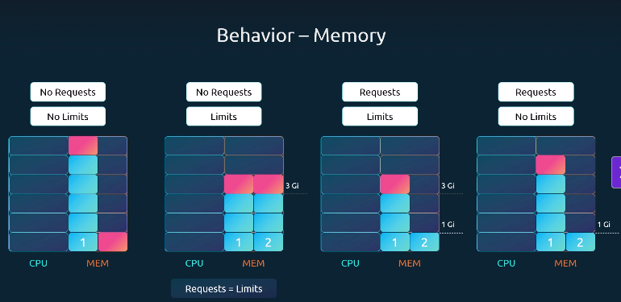
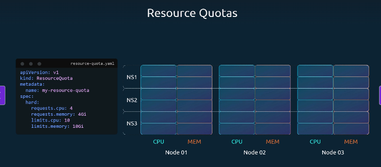

In a Kubernetes cluster, each node has limited CPU and memory resources. Every pod requests specific resources, and when scheduled, it consumes them from the assigned node.
The Kubernetes Scheduler decides where a pod runs:
- It checks if a node has enough free resources to host the pod.
- If a node has insufficient resources, the scheduler skips it.
- If no node can host the pod, the pod remains in a Pending state.


You can verify this using:
Kubernetes Resource Units
A single CPU unit in Kubernetes can represent:
- 1 AWS vCPU
- 1 GCP Core
- 1 Azure Core
- 1 Hyperthread
You can request fractional CPUs as well:
0.1CPU = 100m (milliCPU)- Minimum granularity is 1m.
- Example:
cpu: 5means the container requests 5 vCPUs (if nodes have enough capacity).
CPU Table
| Unit | Equivalent |
|---|---|
| 1 CPU | 1 AWS vCPU / 1 GCP Core / 1 Azure Core / 1 Hyperthread |
| 0.1 CPU | 100 milliCPU (m) |
| 1m CPU | Smallest allocatable unit |
Memory Resources
Memory can be expressed using different suffixes. By default, a container has no limit and can consume all available memory on a node — potentially starving other processes.
You can prevent this by setting memory limits.
Memory Table
| Unit | Equivalent |
|---|---|
| 1G (Gigabyte) | 1,000,000,000 bytes |
| 1M (Megabyte) | 1,000,000 bytes |
| 1K (Kilobyte) | 1,000 bytes |
| 1Gi (Gibibyte) | 1,073,741,824 bytes |
| 1Mi (Mebibyte) | 1,048,576 bytes |
| 1Ki (Kibibyte) | 1,024 bytes |
Example
memory: 256Mi→ 256 Mebibytesmemory: 1G→ 1,000 MBmemory: 1Gi→ 1,024 MB
Resource Limits
- By default, containers can consume unlimited CPU/Memory from a node.
- Requests are the minimum guaranteed resources for a container.
cpu: 2→ Scheduler guarantees 2 vCPUs.-
memory: 1Gi→ Scheduler guarantees 1 GiB of memory. -
Limits are the maximum resources a container can use.
cpu: 2→ Container cannot exceed 2 vCPUs.memory: 2Gi→ Container cannot exceed 2 GiB of memory.
Pod Resource Requests and Limits in YAML (Click to Expand)
What Happens When a Pod Exceeds Its Limits?
-
CPU:
If a pod tries to use more CPU than its limit, the system will throttle it.
The container cannot exceed the defined CPU limit. -
Memory:
Memory works differently. A container can attempt to use more memory than its limit,
but if it consistently exceeds that value, the pod will be terminated.
You’ll see the termination reason as OOMKilled (Out of Memory) in logs or in
the output ofkubectl describe pod.
Behavior of CPU Requests and Limits
By default, Kubernetes does not define CPU or memory requests or limits.
This means any pod can consume as many resources as it wants, potentially starving other pods or system processes.
Let’s examine different scenarios with two pods competing for CPU:
CPU Requests and Limits Behavior
| Scenario | Requests | Limits | Behavior | Notes / Best Practice |
|---|---|---|---|---|
| 1. No Requests, No Limits | ❌ None | ❌ None | Pods can consume unlimited CPU. One pod may take all resources and starve others. | ⚠️ Not recommended |
| 2. No Requests, With Limits | ❌ None | ✅ Set | Kubernetes assumes requests = limits. Example: if limit = 3 vCPUs, pod gets exactly 3 vCPUs. | Can waste CPU if other pods are idle |
| 3. Requests + Limits | ✅ Set | ✅ Set | Pod is guaranteed requests (e.g., 1 vCPU) and can scale up to the defined limit (e.g., 3 vCPUs). | Fair, but can block a pod from using extra unused CPU |
| 4. Requests Only (No Limits) | ✅ Set | ❌ None | Each pod gets guaranteed CPU (e.g., 1 vCPU) but can use more if available. Other pods are still guaranteed their requests. | ✅ Recommended setup (flexible + fair) |
Key Notes
- By default, Kubernetes sets no requests and no limits.
- Always define requests to guarantee minimum resources for each pod.
- Use limits only when you need to strictly control resource usage (e.g., shared/public clusters).

When to Use Limits
- In some environments (e.g., shared clusters or public labs), limits are required to prevent misuse.
Example: restricting containers from excessive workloads like crypto mining. - For applications you control, consider setting requests but leaving limits unset for better resource utilization.
- Always ensure every pod has requests defined — otherwise, it risks being starved when competing pods consume all available resources.
Behavior of Memory Requests and Limits
Unlike CPU (which can be throttled), memory cannot be throttled.
If a pod exceeds its memory limit, it is killed (OOMKilled) and restarted.
| Scenario | Requests | Limits | Behavior | Notes |
|---|---|---|---|---|
| 1. No Requests, No Limits | ❌ None | ❌ None | One pod can consume all memory and starve others. | ⚠️ Not recommended |
| 2. No Requests, With Limits | ❌ None | ✅ Set | Kubernetes assumes requests = limits. Example: 3Gi request & limit. | Guarantees memory but can waste unused capacity |
| 3. Requests + Limits | ✅ Set | ✅ Set | Example: requests = 1Gi, limits = 3Gi. Pod is guaranteed 1Gi and capped at 3Gi. |
Fair sharing, but strict cap may block efficient usage |
| 4. Requests Only (No Limits) | ✅ Set | ❌ None | Example: requests = 1Gi, no limits. Pod can use all available memory. If it exceeds node capacity, it will be killed. |
✅ Useful for flexibility, but risky since OOMKill occurs |

Default Resource Policies (LimitRanges)
-
By default, pods have no requests or limits.
To enforce defaults at the namespace level, Kubernetes provides LimitRanges. -
A
LimitRangeobject defines: default requests/limits (applied if not set in pod spec)
CPU LimitRange (Click to Expand)
Memory LimitRange (Click to Expand)
LimitRange Explanation
| Field | CPU Example | Memory Example | Meaning |
|---|---|---|---|
| default | 500m |
1Gi |
Default limit if none is specified in the pod/container spec |
| defaultRequest | 500m |
1Gi |
Default request if none is specified in the pod/container spec |
| max | 1 (1 vCPU) |
1Gi |
Maximum value a container can request |
| min | 100m (0.1 vCPU) |
500Mi |
Minimum value a container must request |
| type | Container |
Container |
Applies the LimitRange at the container level |
Key Notes
- LimitRange applies at the namespace level.
- It only affects newly created pods (existing pods are unaffected).
- Ensures fair resource allocation and prevents abuse (e.g., setting extremely high requests).
- Values shown here are examples, not strict recommendations — adjust based on your application needs.
Resource Quotas in Kubernetes
To restrict the total amount of resources consumed by applications in a Kubernetes cluster, you can define ResourceQuotas at the namespace level.
A ResourceQuota sets hard limits on the total amount of CPU and memory that all pods in a namespace can request or consume.
Example Explanation
- requests.cpu: 4 → All pods in this namespace together can request up to 4 CPUs.
- requests.memory: 4Gi → All pods can request up to 4 GiB of memory.
- limits.cpu: 10 → Maximum CPU usage across all pods is 10 CPUs.
- limits.memory: 10Gi → Maximum memory usage across all pods is 10 GiB.
ResourceQuota Example in YAML (Click to Expand)
